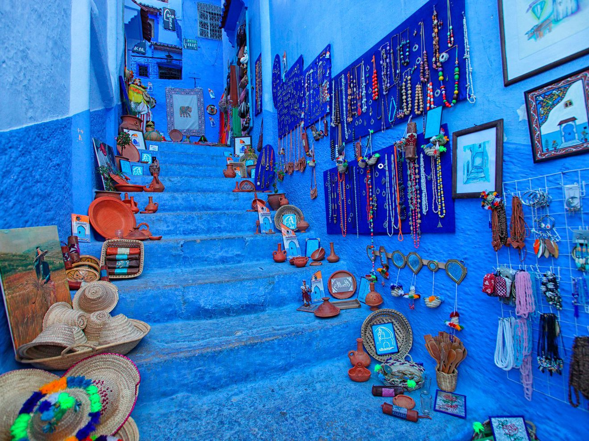
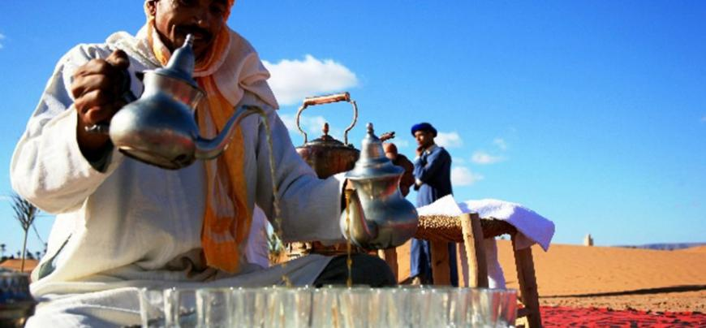

Situé entre Atlantique et Méditerranée, dominé par la chaîne de l'Atlas qui culmine à plus de 4000 m et s'achevant au sud dans le désert, le Maroc est une terre où s'exposent à loisir les caprices de la nature, Couleurs, reliefs, climats, paysages multiples, mais aussi palette humaine ou artistique révélant des contrastes saisissants. Terre de paix où se rencontrent les traditions fortement ancrées, des peuples berbères et arabes, ses quelques 3500 Km de cités sont parsemées de ports où l'histoire s'est chargée des appétits de l'Europe occidentale. Le Maroc d'aujourd'hui offre dans ses cités des métissages d'influences dont les taux différent singulièrement entre les cotes exposées au vent des capitales commerciales de l'Occident chrétien et les terres protégées des montagnes du Rif et de l'Atlas.. le coeur des villes comme dans celui de chacune des régions, palpitent les traditions immémoriales- traditions sur lesquelles s'est greffée la foi coranique, qui donne un sens divin aux gestes les plus quotidiens. Malgré cela, cet islam s'est ouvert aux révolutions techniques et à l'évolution morale de cette fin de siècle, les obscurantismes sont repoussés et les pistes d'autrefois peu à peu font place aux routes asphaltées. 
En dépit de ces aménagements - dans les us et coutumes comme dans le nouveau confort des stations touristiques -, le Maroc reste encore cette expérience "exotique" qui a bouleversé nombre d'artiste comme Delacroix. Flânerie dans les médinas éternelles des villes impériales, randonnées dans les hautes et sauvages vallées de l' Atlas, les plaisirs multiples qu'offre la nature généreuse sur les cotes, mais aussi des expériences qui marquent l'âme au contact des grands espaces de la montagne ou du désert... il n'y a ici ,parfois, qu'une porte entre la ville nouvelle et la médina du Moyen Age, et le même crayon de khôl entre tradition et coquetterie : il reste une intégrité et une richesse culturelle ou l'expérience humaine se mesure à la simplicité et à la grandeur de geste millénaires, celui de l'artisan au fond de son échoppe, ceux du muletier au fil de ruelles étroites et inquiétantes comme des goulet... ou celui du quidam qui offre le thé à la menthe comme une main tendue en signe de paix. 
Le Maroc,un des pays les plus développés en Afrique, est le pays le premier pays en Afrique du Nord au niveau d'attirance des touristes et des infrastructures dédiés aux touristes tel que les hotels.
| Rang | Environnement des affaires | sureté et sécurité | santé et hygiène | RH et marché su travail | Capacité à utiliser les TIC | |
|---|---|---|---|---|---|---|
| Maroc | 65 | 4,7 | 6,1 | 4,6 | 3,9 | 4,3 |
| Egypte | 74 | 4,3 | 3,3 | 5,4 | 4,1 | 3,9 |
| Tunisie | 87 | 4,4 | 4,7 | 5,2 | 4,0 | 4,3 |
| Algérie | 118 | 4,0 | 5,3 | 4,9 | 4,0 | 3,7 |